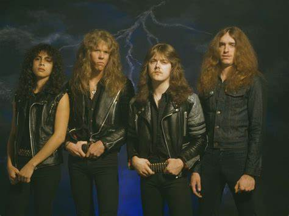
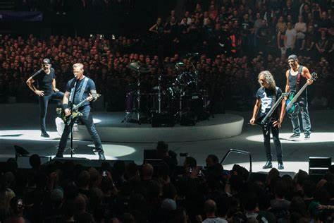
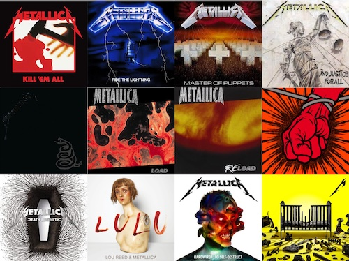

Metallica var stofnuð í Los Angeles í Kaliforníu árið 1981 af trommaranum og fyrrum tennisleikaranum Lars Ulrich, og gítarleikaranum og söngvaranum James Hetfield en þeir kynntust eftir að hafa báðir sett auglýsingar í einkamáladálk dagblaðsins The Recycler. Bassaleikarinn Ron McGovney var einnig með frá upphafi en studdist við nokkra bráðabirgða gítarleikara í upphafi áður en föst skipan komst fyrst á hlutina. Nafnið Metallica varð til þegar Lars Ulrich var að aðstoða mann að nafni Ron Quintana að velja nafn á nýtt tímarit um þungarokk sem hann ætlaði að gefa út. Quintana stakk upp á nafninu Metallica en Lars stakk strax upp á öðru og ákvað að nota nafnið sjálfur á hina nýstofnuðu hljómsveit. Snemma árs 1982 tók Metallica upp lagið „Hit the Lights“, þá var Dave Mustaine gítarleikari genginn til liðs við sveitina. Nokkrum mánuðum síðar var bassaleikarinn Cliff Burton svo fenginn til liðs við sveitina en hann setti það skilyrði að hún yrði þá að flytjast til San Francisco sem þeir gerðu. Vorið 1983 ferðaðist sveitin til New York þar sem þeir komust í kynni við útgáfufyrirtækið Megaforce Records sem þeir sömdu við um að gefa út fyrstu tvær plötur sveitarinnar. Í New York var Dave Mustaine látinn fara (hann stofnaði þá Megadeth) en Kirk Hammett ráðinn í hans stað frá hljómsveitinni Exodus rétt áður en upptökur hófust fyrir fyrstu plötuna. 1983 kom hún svo út og fékk nafnið Kill 'Em All. Strax á næsta ári kom næsta plata út, Ride the Lightning, lögin á henni voru mörg lengri og hægari en á frumrauninni, þar á meðal var Fade to Black sem var það fyrsta af nokkrum svipuðum lögum sem gjarnan eru talin marka muninn á milli Metallica og annarra thrash metal hljómsveita þess tíma.

1985 skrifaði sveitin undir stóran samning við Elektra Records og gaf út plötuna Master of Puppets 1986 sem margir aðdáendur telja besta verk sveitarinnar. Sama ár lést Cliff Burton í rútuslysi í Svíþjóð. Eftir nokkra leit réðu þeir til sín bassaleikarann Jason Newsted og hófu upptökur á næstu plötu. ...And Justice for All myndi hún heita og kom út 1988. Nú var í uppsiglingu stefnubreyting hjá Metallica en þeir fengu Bob Rock til liðs við sig við framleiðsluna með það að markmiði að skapa eitthvað sem væri líklegra til almennra vinsælda en það sem þeir höfðu áður gefið út. Útkoman var Metallica, samnefnd hljómsveitinni og einnig oft kölluð Svarta platan. Lögin voru stytt og einfölduð eins og vinsælasta lagið af plötunni, Enter Sandman ber vott um. Markmiðið náðist og platan seldist í bílförmum og færði Metallica áður óþekktar vinsældir miðað við þungarokkshljómsveit. Um þetta leytið fór mikið að bera á ásökunum eldri aðdáenda um að sveitin hefði „selt sig“ peningavaldinu hjá útgáfufyrirtækjunum. Til að fylgja eftir gríðarlegum vinsældum svörtu plötunnar fór sveitin á tónleikaferðalag sem átti eftir að standa í þrjú ár. Meðlimir sveitarinnar voru örþreyttir eftir þá raun og tóku sér hlé þar sem ekkert nýtt heyrðist frá þeim fyrr en 1995 að þeir fóru að taka upp nýtt efni og gáfu svo út plötunnar Load (1996) og Reload (1997). Þær plötur nutu lítilla vinsælda miðað við það sem undan var gengið og fengu misjafna dóma. Margir af eldri aðdáendum sveitarinnar litu á þær sem sönnun fyrir því að hljómsveitin væri ekki sú sama og á 9. áratugnum og hefði nú endanlega selt sálu sína. Árið 1998 kom út Garage Inc. sem var samansafn tökulaga frá öðrum hljómsveitum en innihélt ekkert nýtt frumsamið efni. Árið 1999 voru svo haldnir tónleikar með sinfóníuhljómsveit San Francisco sem voru svo gefnir út bæði á geisladisk og DVD sem S&M. Tvö ný lög voru kynnt til sögunnar þar, No Leaf Clover og - Human.
Napster deilan:
Á árinu 2000 komst Metallica á snoðir um það að nýjasta lag þeirra þá, I Disappear hafði lekið á netið þar sem notendur Napster forritsins deildu því með hverjum öðrum. Þegar þeir uppgötvuðu svo að öll þeirra tónlist frá upphafi var í boði gjaldfrjálst með hjálp Napster þá ákváðu þeir að kæra Napster og kröfðust þess að 300.000 notendur þess sem höfðu orðið uppvísir að því að deila Metallica lögum yrðu útilokaðir frá kerfinu. Árið 2001 náði Metallica þó samkomulagi við Napster og aldrei kom til þess að einstakir notendur yrðu kærðir fyrir höfundarréttarbrot. Málið hafði þó mjög neikvæð áhrif á ímynd hljómsveitarinnar, sérstaklega var Lars Ulrich útmálaður sem gráðug og tilgerðarleg rokkstjarna úr tengslum við aðdáendur sína.
Á árinu 2000 komst Metallica á snoðir um það að nýjasta lag þeirra þá, I Disappear hafði lekið á netið þar sem notendur Napster forritsins deildu því með hverjum öðrum. Þegar þeir uppgötvuðu svo að öll þeirra tónlist frá upphafi var í boði gjaldfrjálst með hjálp Napster þá ákváðu þeir að kæra Napster og kröfðust þess að 300.000 notendur þess sem höfðu orðið uppvísir að því að deila Metallica lögum yrðu útilokaðir frá kerfinu. Árið 2001 náði Metallica þó samkomulagi við Napster og aldrei kom til þess að einstakir notendur yrðu kærðir fyrir höfundarréttarbrot. Málið hafði þó mjög neikvæð áhrif á ímynd hljómsveitarinnar, sérstaklega var Lars Ulrich útmálaður sem gráðug og tilgerðarleg rokkstjarna úr tengslum við aðdáendur sína.
Platan St. Anger kom út árið 2003. Hún hlaut misjafnar undirtektir aðdáenda og gagnrýnenda. Árið 2008 kom út platan Death magnetic sem þótti sumpart afturhvarf til fyrri stíls. Síðar kom út EP/stuttskífan Beyond Magnetic sem voru afgangslög af Death magnetic. Hún kom fyrst út á netinu en síðar í plötuformi. Árið 2011 gaf Metallica plötuna Lulu með tónlistarmanninum Lou Reed. Platan hlaut misjafna dóma. Metallica spilaði á Suðurskautslandinu árið 2013 og varð fyrsta hljómsveitin til að spila í heimsálfunum sjö. Meðlimirnir sögðu skilið við Warner útgáfuna og stofnuðu eigið útgáfufyrirtæki: Blackened Records.

Metallica vann að tíundu breiðskífu sinni. Í byrjun árs 2016 tjáði Kirk Hammett að platan kæmi út árið 2016 eða 2017.[1] Lars Ulrich sagði að platan yrði kláruð um vorið og að hljómsveitin væri vel á veg komin með lagasmíðar. [2] Platan Hardwired... to Self-Destruct kom út þann 18. nóvember, 2016. Platan er tvöföld og nálægt 80 mínútur að lengd. Bónusútgáfan inniheldur þriðja diskinn sem er með laginu Lords of Summer, ábreiðulögum og tónleikaupptökum. [3] Þann 28. nóvember 2022 gáfu Metallica út stutt þrasslag Lux Æterna og tilkynntu að platan 72 Seasons kæmi út í apríl 2023.